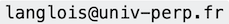

Algorithmique et Programmation en 2022
Contenu
1. Algorithmique et Programmation en 2022¶
Mis à jour : Apr 04, 2022, lecture : 10 minutes minimum, PhL.
Vous : L1 math-info
Moi : Philippe Langlois
Comment me contacter : 
Comment me rencontrer : sur RDV DEMANDÉ PAR E-MAIL
Où me rencontrer : au bâtiment B, étage 1, à gauche (laboratoire DALI).
1.1. Algo-Prog : version 2022¶
Les supports du CM régulièrement mis à jour.
Les autres ressources sont sur l’espace moodle de cet enseignement.
1.1.1. Version 2022¶
nouvelle offre de formation 2021-2025 : algo + prog = 1 UE
12 séances de CM : 3h/semaine
12 séances de TD-TP : 3h/semaine
chargés de TD : Ph. Langlois (2), Vincent Zucca
Démarrage : CM en semaine 3 (
sd=s3), TD en s4, vacances en s9, s17-s18
1.1.2. Contrôle de connaissances et dates importantes¶
CC : contrôle “dit” continu, CT contrôle “dit” terminal
Warning
Note UE = CC1/2 + CC2/4 + CT/4
modifié le 04.07.22 ~~CC1 : 0.2 * TP1 + 0.8 * TP2~~
CC1 : 0.2 * TP1 + 0.4 * TP2 + 0.4 * TP3
1/3-parcours : TP1 à rendre en
sd+72/3-parcours : TP2 individuel, en temps limité, sur machine UPVD : 3h à
sd+12fin de semestre : TP3 individuel, en temps limité, sur machine UPVD : 3h à
sd+14
CC2 : écrit mi-parcours, 2h à
sd+8CT : écrit de fin de semestre, 2h pendant semaine examen
Dates. Les dates de ces évaluations sont annoncées en début de la page d’accueil du cours.
1.2. Structure de l’enseignement¶
1.2.1. Organisation¶
11 chapitres, 11 semaines, 11 séances de CM, 11 séances de TD ou TP
“12ème séance” : écrit mi-parcours, TP de fin de semestre
Chaque chapitre :
explicitation des compétences : savoirs, savoir-faires
un quizz d’aide à la compréhension et la mémorisation de ces compétences
l’enseignant … présente et explique des exercices détaillés en CM
vous … travaillez sur des exercices de TD et de TP, les contrôles des années précédentes, …
1.2.2. CM¶
Warning
Le CM est essentiel à la compréhension globale de l’UE issue de l’articulation de toutes les notions traitées.
Alternance de séquence pour séance de 3 heures :
“matière de cours” : nouvelles notions (40 min)
d’exercices dirigés et d’interactions : quizz, questions/réponses, … (10 min)
pause (10 min)
1.2.3. La très grande importance des CM¶
Tout ce qui est nécessaire à votre compréhension est présenté en cours avec des explications orales adaptées, les répétitions nécessaires des points importants, les mises en garde sur les notions difficiles, ce qui est essentiel vs. ce qui est plus secondaire, les compétences à acquérir : savoir, savoir faire et savoir être, ce qui est attendu pour le contrôle de connaissance, ce qui relève de l’objectif 10 vs. de l’objectif 20, …
les 2/3 du travail de compréhension/mémorisation reposent sur les CM
Morale : ne manquer aucun CM, être attentif, prendre des notes, poser des questions, se poser des questions, demander des pauses pour reprendre une attention maximale
les notes de cours fournies sont trompeuses : comme un film sans le son
Méthodologie :
relire le cours le soir de l’amphi (15-20 min)
le reprendre en détail 4-5 jours après en préparant des exercices de TD ou de TP – en groupe : ça aide !
faire une auto-évaluation de ce que vous en avez retenu la veille du cours suivant : le chapitre compétences est utile.
identifier les questions à poser en séance de TD ou en CM
1.2.4. Les TD pour réfléchir et travailler en petit groupe¶
séance de 1h25
par groupe de 2 à 4
objectif 10 ou objectif 20
feuilles de TD en 2 parties
objectif 10 :
applications basiques du cours, démarche guidée
pour celles et ceux qui ne veulent pas continuer en informatique au delà du L2 math-info
objectif 20 :
applications plus avancées du cours, démarche plus autonome
pour celles et ceux qui veulent continuer en licence et master informatique, CAPES informatique (nouveau !), …
comment choisir son niveau d’objectif ?
note algo semestre 1 < 10 –> objectif 10
le choix n’est pas définitif
méthodologie : chaque (groupe) d’étudiants définit son rythme en suivant le parcours proposé par le chargé de TD.
1.2.5. Les TP pour maîtriser les notions et acquérir du savoir-faire personnel¶
1 TP = un notebook jupyter
codage, expérimentation et approfondissement :
des TD d’algo
du CM de Programmation
exemples de TP avec dead-line (pour l’évaluation de CC) :
mini base de données
traitement d’images
cryptographie
1.2.6. Les outils pour mieux comprendre, mieux retenir¶
Tip
Pratiquer pour maîtriser
un environnement python qui fonctionne
les notebook jupyter
sur votre machine : la solution à privilégier
en ligne : google colab, cocalc
Débuter avec les notebooks. De Denis Pinsard et disponible sur moodle
première séance de TD
-
permet de visualiser l’effet des instruactions d’un petit code
très utile au début pour comprendre des effets de programmation, pas d’algorithmique
complément de l’idle python
demo
les quizz en ligne (moodle)
1.3. Savoirs, savoir faire, savoir être¶
Des connaissances à connaître :)
Des techniques à savoir mettre en oeuvre
Des outils à savoir utiliser
Des ressources à savoir mobiliser
1.3.1. Acquis du semestre 1 et prérequis¶
Savoir différencier les types de données :
type scalaire : booléen, entier, réels, caractères
type composés : chaîne de caractères, vecteur, matrice, …
Connaître leur représentation dans un langage informatique donné
bool,int,float,str,listet les changement de types associés :
int(),float(), …(python) : un rappel sur le “type”
boolest proposé en annexe du cours.
Bien différencier valeur vs. variable vs. constante
évaluation
et comprendre comment le modèle d’exécution en modifie l’état
affectation :
=
Bien comprendre le modèle séquentiel de l’exécution d’un algorithme
instruction
expression (“formule”)
Comprendre que les structures de contrôle permettent de casser la séquentialité de l’exécution d’un algorithme
branchement conditionnel : choisir
if ...:,elif ...:,else:
répétitions : répéter
whilefor . in ..., (break,continue)
Distinguer : les entrées vs. le traitement vs. la sortie
input(),print()
Spécificités python
indentation
typage dynamique
1.4. Programme détaillé : aspects plutôt algorithmique¶
Utilisation avancée de boucles et de tableaux
boucles imbriquées, indépendantes ou non
traitements divers avec des tableaux 1D ou plus
premières estimations de complexité
Complexité
combien coûte un algorithme pour résoudre un pb donné ?
combien de temps ? combien de place mémoire ?
tous les problèmes coûtent pareils ?
notions : complexité en temps, pire cas, complexité asymptotique
exemples d’algos plutôt numériques et leurs complexités
différentes évaluations de polynômes
Récursivité :
la notion centrale du semestre
principes
applications
notions : itératif vs. récursif, pile/arbre des appels, complexité
Note
La récursion s’appuie sur la notion de fonction présentée dans les aspects plutôt programmation.
Rechercher
recherche séquentielle
recherche dichotomique
notions : les algos, leurs complexités, (les preuves)
versions itératives ou récursives de ces algorithmes
Trier
des algorithmes de tris dits naïfs : algos, complexité, (preuve)
des algorithmes de tris dits rapides : : algos, complexité, (preuve)
versions itératives ou récursives de ces algorithmes
Compléments si assez de temps : prouver la terminaison et la correction d’un algorithme
l’algo fournit la/les solution/s en un temps fini
l’algo résoud bien le pb
notions : invariant de boucle, preuve de terminaison
1.5. Programme détaillé : aspects plus programmation¶
Types de donnnées scalaires
rappels
approfondissement : introspection
Fonctions une notion centrale
fonctions prédéfinies ou existantes
en-tête, corps, appel, paramètres formels et effectifs.
portée, visibilité, variables locales vs. paramètres
mode de passage des paramètres
exemples du cours : doubler, permuter
Tableaux 1D :
rappel : avec des listes python (
lst)exemples du cours : Lire, stocker, moyenne/min/max d’un tableau (valeurs, indices)
applications : les vecteurs, les chaînes de caractères
Tableaux 2D, 3D ; application au traitement d’images
avec des listes (de listes) python
images et matrices
boucles imbriquées
exemples du cours :
traitement d’images : initialisation niveaux de gris, transformations d’images (miroir, contraste, contours, …)
algorithmes sur les matrices : vérification (identité, symétrie), calcul (produit de matrices,…) , génération de formes particulières (transposée, …)
Note
Par manque de temps, les ndarray de numpy, ne sont pas abordés en séance bien que très utiles en pratique.
Ces ressources pourront être découvertes de façon autome et utilisées par les étudiants (objectif 20) qui le souhaitent.
Autres types de données composés
listes (
lst) : fonctions et méthodesn-uplets (
tuple), ensembles (set), dictionnaires (dict)
Entrées/sorties et fichiers
Très pratique pour tester ses développements :
Important
Bannir les entrées au clavier ! Plus d’
input()à tours de bras SVP !!!Chapître traité assez tôt dans le semestre
Modules
utilisation de modules existants
exemple d’outils :
numpy,scipy,matplotlib,timedéfinition de ses modules
Exceptions
En annexe par manque de temps
1.6. Supports de cours¶
Note
Excepté les supports de cours cette année, toutes les autres ressources sont sur moodle et sont mises à jour très régulièrement
CM : notebook python (version pdf, html)
TD : feuilles d’exercices (pdf)
TP : notebook python (versions ipynb, pdf, html)
sujets et correction des CC et CT des années précédentes
Au fur et à mesure du semestre :
TD : corrections des exercices objectif 10
1.7. Travailler en python¶
Il est indispensable :
d’avoir accès à un environnement de programmation python, si possible assez complet,
d’avoir son propre ordinateur configuré de façon complète et selon vos préférences.
Il y a déjà 3 choix d’OS possibles : windows, linux et mac os ; les 2 premiers étant disponibles sur les ordinateurs de l’UPVD.
Ensuite, les distributions python sont assez variées, et peuvent différer selon les OS .
Il est aisé pour chacun de trouver ce qui correspond à ses contraintes matérielles et ses envies.
1.7.1. IMPORTANT : De quoi a-t-on absolument besoin ?¶
Ce qui suit est une liste minimale de composants utiles cette année et les années à venir. Elle peut sembler longue mais en pratique, ces composants “arrivent” d’un seul coup avec une distribution – cf. paragraphe suivant.
l’
IDLEpython 3éditeur, interpréteur, débugger utilisé en TP au semestre 1
jupyter notebookpour intégrer dans un unique fichier du texte, des maths (\(\LaTeX\)) et du code python qui s’exécute, les résultats de ces éxecutions (valeurs, courbes, images, …) et exporter tout ça en
htmloupdfou enslidetrès utile pour les exercices
utilisé pour les TP de programmation à rendre
utilisable dans toutes les matières ou presque
les gestionnaire de paquets (modules) python pour compléter et mettre à jour son environnement
conda: plus complet si distribution anaconda utilisée (solution recommandée)pip: classiqueExemple d’utilisation :
conda:conda list,pip install le_module_que_je_veuxet voilà, c’est fini !pip: pareillist,update,install
modules indispensables
numpy: fournit des vrais tableaux multi-dimentionnels et des tas de fonctions et types numériques pour effectuer du calculmatplotlib: pour le traitement graphique de données, et en particulier :matplotlib.pyplotpour des affichages élaborésmatplotlib.imagepour le traitement d’images
tkinter: pour réaliser des interfaces graphiques
modules utiles mais optionnels cette année
scipy: scientific python qui rassemble des modules de calcul scientifiques (dontnumpy)
Pièges
Ne pas confondre
python 2etpython 3
Conseil
Choisir une distribution la plus complète possible dès le début.
1.7.2. En pratique¶
Installer un environnement python¶
On conseille d’installer la distribution Anaconda.
Dans ce cadre, on peut s’aider des liens ci-après.
Le web est bien sûr plein de tutos et autres sites explicatifs …
Un autre pour mac mais/et en anglais, très complet : le début seul devrait vous suffire.
Distributions python classiques¶
On télécharge, on installe, on travaille !
Anaconda : à privilégier (pour son gestionnaire
conda) sauf choix perso justifié.Enthought Python Distribution : très complet
Thonny Attention : Thonny installe sa propre version de Python par défaut.
SAGEMATH : bcp plus général qu’un simple environnement python. A conseiller pour ceux qui veulent continuer en … mathématiques.
Environnement de travail en autonomie pour machine étudiant¶
edupython issu d’AmiensPython mais pour windows
Moteur Python : version 3.7.6
Editeur : PyScripteur (version 3.6.3)
Administration de base de données : SQLite Database Browser (version 3.11.2)
Jupiter notebook préinstallé
Module lycée
Calcul numérique: Numpy (version 1.18.3) et Scipy (version 1.4.1)
Sorties graphiques: Matplotlib (version 3.1.3)
Calcul formel: Sympy (version 1.5.1)
Traitement d’images: PIL (Pillow 7.0.0) et Open CV (Version 4.2.0)
Liaison série: Serial (version 2.7)
Base de données: SQLite3 (version standard) et mysql (version 8.0.13)
Traitement de données: Pandas (version 1.0 3)
Réalisation de jeux: Pygame (version 1.9.4)
Autres: pyknon (musique), Nanpy (Arduino), Follium (cartes), scikit-learn (IA)…
1.7.3. Monsieur ….¶
Non : je ne sais pas pourquoi “ça ne marche pas quand …” !
Note
Quand ma voiture/moto est en panne, je m’adresse à un garagiste.
Pourtant je sais la conduire.
Pourtant j’ai fait des études qui me permett(rai)ent de participer à sa conception, sa construction, sa mise au point, sa diffusion, …
1.8. Références bibliographiques¶
1.8.1. Algo et prog¶
Informatique pour tous en CPGE avec Python et nouveaux programmes 2013 :
B. Wack et al. (Eyrolles)
Th. Audibert et A. Oussalah. (Ellipses)
E. Le Nagard (Pearson)
L’introduction de la spécialité NSI (Numérique et Science Informatique) a donné l’opportunité de la publication de nombreux ouvrages de niveau Première ou Terminale. Le programme de ces classes étant assez ambitieux, ces ouvrages sont de bonnes premières références, voire de très bonnes pour les étudiant.e.s Objectif 10.
Ellipses¶
Titre : Spécialité Numérique et sciences informatiques : 30 leçons avec exercices corrigés - Première - Nouveaux programmes Auteur(s) : Balabonski Thibaut, Conchon Sylvain, Filliâtre Jean-Christophe, Nguyen Kim Editeur : Ellipses ISBN : 9782340033641 (Première) Volume niveau Terminale en préparation.
Titre : Spécialité Numérique et sciences informatiques - Première, , Terminale - nouveaux programmes Auteur(s) : Serge Bays (Auteur) Bertrand Hauchecorne (Direction) Editeur : Ellipses Collection Prepas Sciences ISBN : 2340031729 (Première), 2340038448 (Terminale)
Titre : Spécialité NSI (numérique et sciences informatiques) - Première - nouveaux programmes Auteur(s) : Legrand David Editeur : Ellipses Collection Parcours et méthodes ISBN : 9782340038578 (Première),
Spécialité Numérique et sciences informatiques - Première - nouveaux programmes Cécile Canu (Auteur) Editeur : Ellipses Collection Competences Attendues ISBN : 2340031788
Titre : Spécialité NSI - Numérique et sciences informatiques - Terminale - nouveaux programmes Auteur(s) : Jean-Christophe Bonnefoy (Auteur) Bertrand Petit (Auteur) Editeur : Ellipses Collection Competences Attendues ISBN : 2340038154
Hatier¶
Titre : NSI 1ère générale (spécialité) - Prépabac Cours & entraînement. Nouveau programme, nouveau bac (2020-2021) Auteur(s) : Céline Adobet (Auteur) Guillaume Connan (Auteur) Gérard Rozsavolgyi (Auteur) Laurent Signac (Auteur) Nouveau programme de Première (2020-2021) Editeur : Hatier Collection : Prepabac Entrainement Progress ISBN : 2401052305 Version e-book : 8,99€
Titre : NSI Tle générale (spécialité) - Prépabac Cours & entraînement. Nouveau programme, nouveau bac (2020-2021) Auteur(s) : Guillaume Connan (Auteur) Vojislav Petrov (Auteur) Gérard Rozsavolgyi (Auteur) Laurent Signac (Auteur) Editeur : Hatier Collection : Prepabac Entrainement Progress ISBN : 2401064613 Version e-book : 8,99€
Nathan¶
Titre : Interros des Lycées Numérique Sciences Informatiques - Première, Terminale Auteur(s) : Stéphane Pasquet (Auteur) MIKAEL LEOPOLDOFF Editeur : Nathan Collection: Interros des Lycées ISBN : 2091574651 (Première), 2091575437 (Terminale)
1.8.2. Approfondisssement en algo¶
Des petits livres
Cormen
Damphousse
Des gros, voire très gros, livres
Cormen et al.
Knuth
1.8.3. Approfondisssement en programmation Python¶
poly ou bouquin de Cordeau-Pointal (fr)
ref python 3 (eng)
1.9. Conclusion¶
Bon courage et bon travail ce semestre !